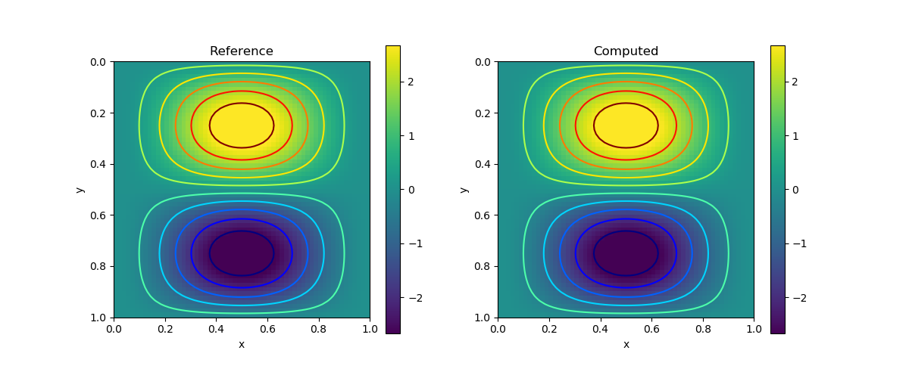
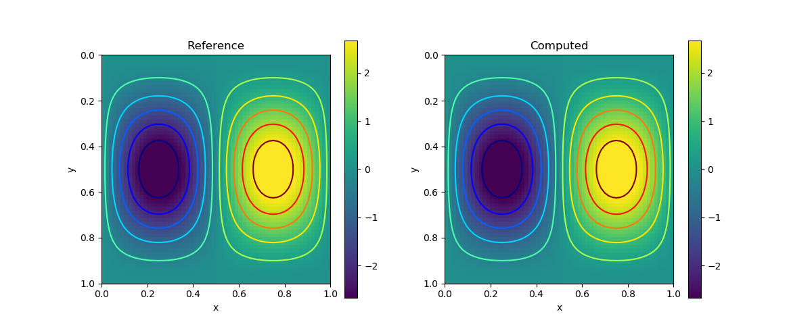
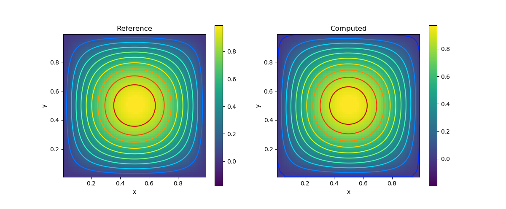

PDE Galleries
Here is a collection of common partial differential equations and how you can solve them using the PoreFlow library. Unless we specify particularly, the computational domain will be $\Omega = [0,1]^2$. The configuration of the computational domain is as follows

We only show the forward modeling, but the inverse modeling is a by-product of the AD-capable implementation!
Poisson's Equation
Consider the Poisson's equation
The analytical solution is given by
We have
using PyPlot
using PoreFlow
m = 50; n = 50; h = 1/n
A = constant(compute_fem_laplace_matrix1(m, n, h))
F = eval_f_on_gauss_pts((x,y)->2π^2*sin(π*x)*sin(π*y), m, n, h)
bd = bcnode("all", m, n, h)
A, _ = fem_impose_Dirichlet_boundary_condition1(A, bd, m, n, h)
rhs = compute_fem_source_term1(F, m, n, h)
rhs[bd] .= 0.0
sol = A\rhs
sess = Session(); init(sess)
S = run(sess, sol)
figure(figsize=(10,4))
subplot(121)
visualize_scalar_on_fem_points(S, m, n, h)
title("Computed")
subplot(122)
visualize_scalar_on_fem_points(eval_f_on_fem_pts((x,y)->sin(π*x)*sin(π*y), m, n, h), m, n, h)
title("Reference")
Stokes's Problem
The Stokes problem is given by
Here $\nu$ denotes the fluid viscosity, $f$ is the unit external volumetric force acting on the fluid, $p$ is the pressure, and $\mathbf{u}$ is the fluid velocity.
The boundary conditions are given by
Here $\partial \Omega = \bar\Gamma_1\cup \bar \Gamma_2$, $\Gamma_1\cap \Gamma_2 = \emptyset$.
The second boundary condition indicates that there is no tangential flow. A realistic example is the cerebral venous network. $\Gamma_1$ corresponds to the lateral boundary (the vessel wall), and $\Gamma_2$ corresponds to the the union of inflow/outflow boundaries.
In the weak form, the boundary term from $-\nu\Delta\mathbf{u}$ is $\int_\Omega u_x v_1 n_1 + u_y v_1 n_2 + v_x v_2 n_1 + v_2 v_2 n_2 d\mathbf{x}$ Note that on the no tangential flow boundary gives $un_2 = n_1 v \Rightarrow u_y n_2 = v_y n_1$ Additionally, we have from incompressibility $u_x + v_y = 0$
Combining the above two equations we have $u_x v_1 n_1 + u_y v_1 n_2 = 0$
Likewise, $v_x v_2 n_1 + v_2 v_2 n_2 = 0$ on the no tangential boundary. For the other boundary $\Gamma_1$, these two terms vanishes because $v_1 = v_2 = 0$. Therefore, the current boundary condition leads to a zero boundary term.
We consider the following analytical solution
and we let $\nu=0.5$.
using PoreFlow
using PyPlot
using SparseArrays
m = 60
n = 60
h = 1/n
function f1func(x,y)
18.8495559215388*pi^2*sin(pi*x)^2*sin(pi*y)*cos(pi*y) - 6.28318530717959*pi^2*sin(pi*y)*cos(pi*x)^2*cos(pi*y) + pi*sin(pi*y)*cos(pi*x)
end
function f2func(x,y)
-18.8495559215388*pi^2*sin(pi*x)*sin(pi*y)^2*cos(pi*x) + 6.28318530717959*pi^2*sin(pi*x)*cos(pi*x)*cos(pi*y)^2 + pi*sin(pi*x)*cos(pi*y)
end
ν = 0.5
K = ν*constant(compute_fem_laplace_matrix(m, n, h))
B = constant(compute_interaction_matrix(m, n, h))
Z = [K -B'
-B spdiag(zeros(size(B,1)))]
bd = bcnode("all", m, n, h)
bd = [bd; bd .+ (m+1)*(n+1); ((1:m) .+ 2(m+1)*(n+1))]
Z, _ = fem_impose_Dirichlet_boundary_condition1(Z, bd, m, n, h)
F1 = eval_f_on_gauss_pts(f1func, m, n, h)
F2 = eval_f_on_gauss_pts(f2func, m, n, h)
F = compute_fem_source_term(F1, F2, m, n, h)
xy = fvm_nodes(m, n, h)
rhs = [F;zeros(m*n)]
rhs[bd] .= 0.0
sol = Z\rhs
sess = Session(); init(sess)
S = run(sess, sol)
xy = fem_nodes(m, n, h)
x, y = xy[:,1], xy[:,2]
U = @. 2*pi*sin(pi*x)*sin(pi*x)*cos(pi*y)*sin(pi*y)
figure(figsize=(12,5))
subplot(121)
visualize_scalar_on_fem_points(U, m, n, h)
title("Reference")
subplot(122)
visualize_scalar_on_fem_points(S[1:(m+1)*(n+1)], m, n, h)
title("Computed")
savefig("stokes1.png")
U = @. -2*pi*sin(pi*x)*sin(pi*y)*cos(pi*x)*sin(pi*y)
figure(figsize=(12,5))
subplot(121)
visualize_scalar_on_fem_points(U, m, n, h)
title("Reference")
subplot(122)
visualize_scalar_on_fem_points(S[(m+1)*(n+1)+1:2(m+1)*(n+1)], m, n, h)
title("Computed")
savefig("stokes2.png")
xy = fvm_nodes(m, n, h)
x, y = xy[:,1], xy[:,2]
p = @. sin(pi*x)*sin(pi*y)
figure(figsize=(12,5))
subplot(121)
visualize_scalar_on_fvm_points(p, m, n, h)
title("Reference")
subplot(122)
visualize_scalar_on_fvm_points(S[2(m+1)*(n+1)+1:end], m, n, h)
title("Computed")| Variable | Result |
|---|---|
| $u$ |  |
| $v$ |  |
| $p$ |  |
Heat Transfer
We consider the following heat transfer equation
Test Problem
Let us first consider a test problem and consider the analytical solution
and $\mathbf{u} = \begin{pmatrix} 1& 1 \end{pmatrix}$. The right hand side is given by
using SymPy
x, y, t = @vars x y t
T = (1-x)*x*(1-y)*y*exp(-t)
f = diff(T, t) + diff(T, x) + diff(T, y) - diff(diff(T, x), x) - diff(diff(T, y), y)
println(replace(replace(sympy.julia_code(f), ".*"=>"*"), ".^"=>"^"))We can plug the source term into the code
using PoreFlow
using PyPlot
m = 50
n = 50
h = 1/n
NT = 100
Δt = 1/NT
u = [ones(m*n);ones(m*n)]
bd = bcedge("all", m, n, h)
M = compute_fvm_mass_matrix(m, n, h)
K, rhs1 = compute_fvm_advection_matrix(u, bd, zeros(size(bd, 1)), m, n, h)
S, rhs2 = compute_fvm_tpfa_matrix(missing, bd, zeros(size(bd, 1)), m, n, h)
function Func(x, y, t)
-x*y*(1 - x)*(1 - y)*exp(-t) - x*y*(1 - x)*exp(-t) - x*y*(1 - y)*exp(-t) + x*(1 - x)*(1 - y)*exp(-t) + 2*x*(1 - x)*exp(-t) + y*(1 - x)*(1 - y)*exp(-t) + 2*y*(1 - y)*exp(-t)
end
A = M/Δt + K - S
A = factorize(A)
U = zeros(m*n, NT+1)
xy = fvm_nodes(m, n, h)
x, y = xy[:,1], xy[:,2]
u0 = @. x*(1-x)*y*(1-y)
F = zeros(NT+1, m*n)
Solution = zeros(NT+1, m*n)
for i = 1:NT+1
t = (i-1)*Δt
F[i,:] = h^2 * @. Func(x, y, t)
Solution[i,:] = eval_f_on_fvm_pts((x,y)->(1-x)*x*(1-y)*y*exp(-t), m,n, h)
end
F = constant(F)
function condition(i, args...)
i <= NT
end
function body(i, u_arr)
u = read(u_arr, i)
u_arr = write(u_arr, i+1, A\(M*u/Δt - rhs1 + rhs2 + F[i+1]))
return i+1, u_arr
end
i = constant(1, dtype = Int32)
u_arr = TensorArray(NT+1)
u_arr = write(u_arr, 1, u0)
_, u = while_loop(condition, body, [i, u_arr])
u = set_shape(stack(u), (NT+1, m*n))
sess = Session(); init(sess)
U = run(sess, u)
Z = zeros(NT+1, n, m)
p = visualize_scalar_on_fvm_points(U, m, n, h)
# saveanim(p, "heat_sol.gif")
p = visualize_scalar_on_fvm_points(abs.(U-Solution), m, n, h)
# saveanim(p, "heat_error.gif")
| Computed | Error |
|---|---|
 |  |
Advection Effect
Now let us consider the advection effect. The upper and lower boundaries are fixed Dirichlet boundaries. The left and right are no-flow boundaries
using PoreFlow
using PyPlot
m = 40
n = 20
h = 1/n
NT = 100
Δt = 1/NT
u = 0.5*[ones(m*n);zeros(m*n)]
up_and_down = bcedge("upper|lower", m, n, h)
M = compute_fvm_mass_matrix(m, n, h)
K, rhs1 = compute_fvm_advection_matrix(u, up_and_down, zeros(size(up_and_down, 1)), m, n, h)
S, rhs2 = compute_fvm_tpfa_matrix(missing, up_and_down, zeros(size(up_and_down, 1)), m, n, h)
A = M/Δt + K - 0.01*S
A = factorize(A)
U = zeros(m*n, NT+1)
xy = fvm_nodes(m, n, h)
u0 = @. exp( - 10 * ((xy[:,1]-1.0)^2 + (xy[:,2]-0.5)^2))
function condition(i, args...)
i <= NT
end
function body(i, u_arr)
u = read(u_arr, i)
u_arr = write(u_arr, i+1, A\(M*u/Δt - rhs1 + rhs2))
return i+1, u_arr
end
i = constant(1, dtype = Int32)
u_arr = TensorArray(NT+1)
u_arr = write(u_arr, 1, u0)
_, u = while_loop(condition, body, [i, u_arr])
u = set_shape(stack(u), (NT+1, m*n))
sess = Session(); init(sess)
U = run(sess, u)
Z = zeros(NT+1, n, m)
for i = 1:NT+1
Z[i,:,:] = reshape(U[i,:], m, n)'
end
p = visualize_scalar_on_fvm_points(Z, m, n, h)
saveanim(p, "advec.gif")